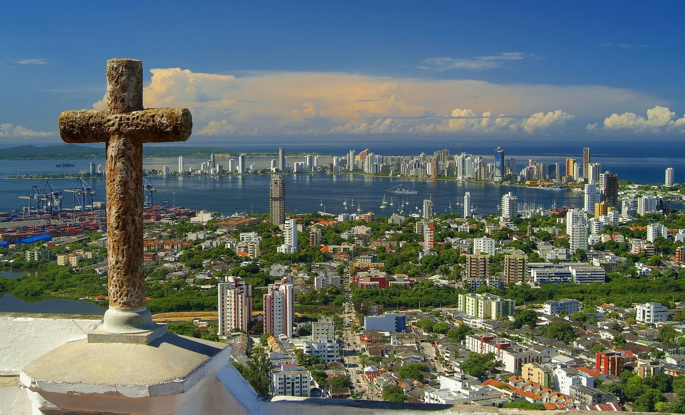
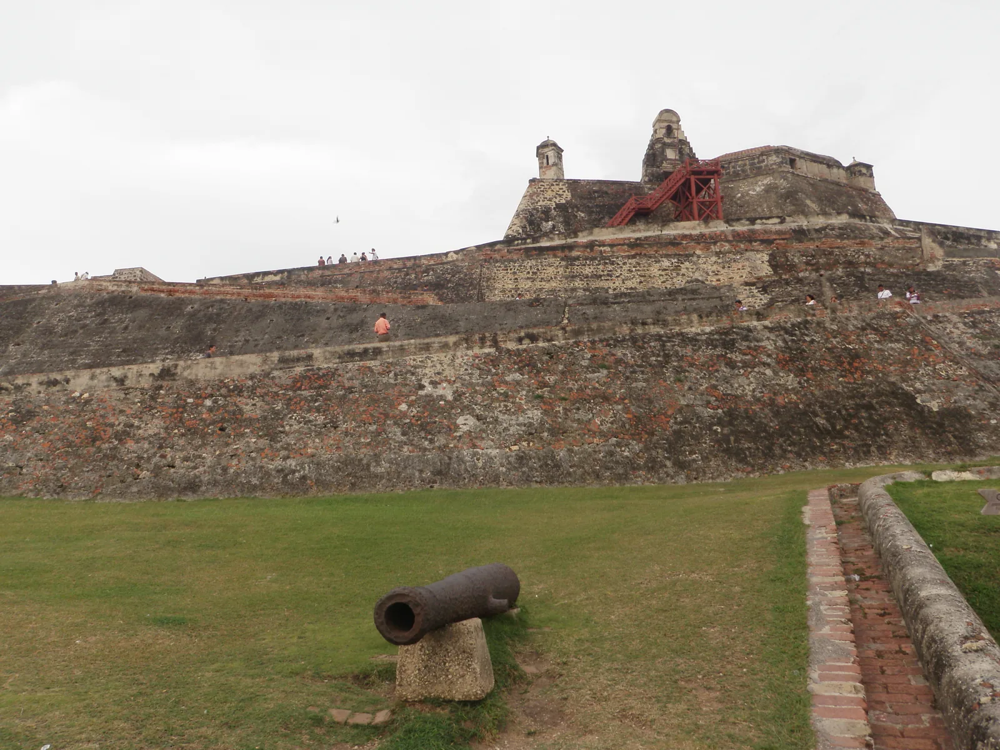
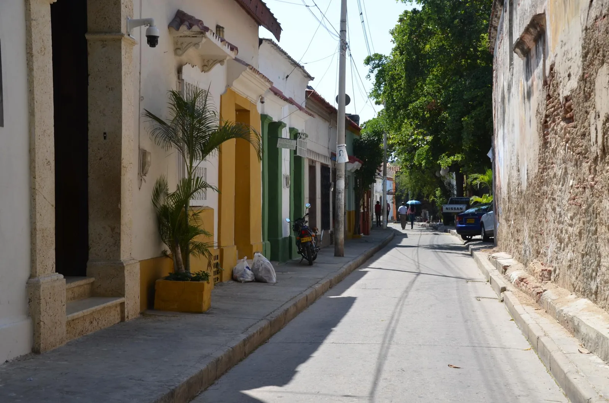

BORRADOR PRIVADO · Lugar 1 · sin aprobación ni publicación
Cartagena de Indias

Norma Gòmez / Wikimedia Commons / CC BY 2.0; redimensionado y convertido a WebP · Original y procedencia · Licencia. Fotografía histórica; no acredita estado actual.
JuanGris (Lucía Estévez) / Wikimedia Commons / CC BY-SA 3.0; redimensionado y convertido a WebP · Original y procedencia · Licencia. Fotografía histórica; no acredita estado actual.
Joe Ross / Wikimedia Commons / CC BY-SA 2.0; redimensionado y convertido a WebP · Original y procedencia · Licencia. Fotografía histórica; no acredita estado actual.Dr. Thomas Liptak / Wikimedia Commons / CC BY-SA 4.0; redimensionado y convertido a WebP · Original y procedencia · Licencia. Fotografía histórica; no acredita estado actual.Murallas, barrios y memoria junto al Caribe
Cartagena reúne patrimonio urbano y vida caribeña. Recorre el centro histórico, reconoce las fortificaciones y reserva tiempo para Getsemaní, sus calles y la economía local. La visita también invita a mirar la historia de la ciudad más allá de sus fachadas.
Historia / History / História
La fundación colonial de Cartagena de Indias se fecha el 1 de junio de 1533. Su posición en una bahía caribeña la convirtió en un puerto estratégico del sistema colonial español. Esa historia incluye a poblaciones indígenas y africanas esclavizadas, y no se reduce a arquitectura y comercio.
Las defensas se construyeron y ampliaron durante varios siglos. Murallas y fuertes permiten leer la relación entre la ciudad, la bahía y las disputas por las rutas marítimas. El 11 de noviembre de 1811 Cartagena proclamó su independencia absoluta de España.
En 1984 la UNESCO inscribió el puerto, las fortalezas y el conjunto monumental. El reconocimiento comprende un patrimonio vivo: Centro, San Diego y Getsemaní conservan usos residenciales, culturales y comerciales.
Centro histórico y murallas
Recorre plazas y calles de Centro y San Diego, parte del conjunto patrimonial. La ciudad sigue habitada: respeta viviendas y circulación.
Castillo de San Felipe de Barajas
La fortificación domina el acceso terrestre histórico desde el cerro de San Lázaro. Consulta al gestor sobre entradas, recorrido y condiciones de accesibilidad.
Getsemaní
Barrio histórico vinculado a artesanos y población trabajadora. Sus calles y expresiones artísticas contemporáneas ofrecen otra lectura de Cartagena; pide permiso antes de fotografiar personas.
Museo Histórico de Cartagena
El MUHCA propone exposiciones sobre la memoria de Cartagena en el Palacio de la Inquisición. Revisa su información de visita y agenda oficial.
Experiencias / Experiences / Experiências
Caminata de observación por Centro y San Diego; propuesta editorial autónoma, sin guía ni reserva incluida.
Explora las exposiciones del MUHCA; consulta programación y entrada con el museo.
Información práctica / Practical information / Informações práticas
Llegada: el aeropuerto de la ciudad es Rafael Núñez; consulta rutas y condiciones vigentes directamente con tu transportador. No se prometen vuelos ni tiempos de traslado.
Programa caminatas con pausas, agua y protección solar. Confirma condiciones de accesibilidad de cada atractivo; no se ha auditado una ruta accesible.
Antes de contratar transporte, comida o actividades, confirma el precio total y lo incluido. Horarios, tarifas, disponibilidad y condiciones marítimas no están verificados en este borrador.
City walls, neighbourhoods and memory by the Caribbean
Cartagena combines urban heritage with Caribbean life. Explore the historic centre, discover its fortifications and make time for Getsemaní, its streets and local economy. Look beyond the façades to understand the city’s history.
Historia / History / História
Cartagena’s colonial founding dates to 1 June 1533. Its Caribbean bay made it a strategic port within the Spanish colonial system. This history includes Indigenous people and enslaved Africans, and extends beyond architecture and trade.
Defences were built and expanded over several centuries. Walls and forts reveal the relationship between the city, its bay and struggles over maritime routes. On 11 November 1811 Cartagena proclaimed its absolute independence from Spain.
In 1984 UNESCO inscribed the port, fortresses and group of monuments. This is living heritage: Centro, San Diego and Getsemaní retain residential, cultural and commercial uses.
Historic centre and city walls
Explore the squares and streets of Centro and San Diego, part of the heritage ensemble. This is a lived-in city: respect homes and pedestrian movement.
San Felipe de Barajas Castle
This fortification overlooks the historic land approach from San Lázaro hill. Check tickets, routes and accessibility conditions with its manager.
Getsemaní
A historic neighbourhood associated with artisans and working communities. Its streets and contemporary artistic expressions offer another view of Cartagena; ask permission before photographing people.
Cartagena History Museum
MUHCA presents exhibitions on Cartagena’s memory in the Palace of the Inquisition. Check its official visitor information and programme.
Experiencias / Experiences / Experiências
Self-directed walk through Centro and San Diego; an editorial suggestion without an included guide or booking.
Explore MUHCA’s exhibitions; check its programme and admission with the museum.
Información práctica / Practical information / Informações práticas
Arrival: the city’s airport is Rafael Núñez; check current routes and conditions with your carrier. No flights or transfer times are promised.
Plan walks with breaks, water and sun protection. Confirm accessibility at each attraction; no accessible route has been audited.
Before purchasing transport, food or activities, confirm the total price and what is included. Opening times, prices, availability and sea conditions are not verified in this draft.
Muralhas, bairros e memória à beira do Caribe
Cartagena reúne patrimônio urbano e vida caribenha. Explore o centro histórico, conheça as fortificações e reserve tempo para Getsemaní, suas ruas e a economia local. A visita também convida a compreender a história da cidade além das fachadas.
Historia / History / História
A fundação colonial de Cartagena de Indias data de 1º de junho de 1533. Sua posição em uma baía caribenha fez dela um porto estratégico do sistema colonial espanhol. Essa história inclui povos indígenas e africanos escravizados e vai além da arquitetura e do comércio.
As defesas foram construídas e ampliadas ao longo de vários séculos. Muralhas e fortes revelam a relação entre a cidade, a baía e as disputas pelas rotas marítimas. Em 11 de novembro de 1811 Cartagena proclamou sua independência absoluta da Espanha.
Em 1984 a UNESCO inscreveu o porto, as fortalezas e o conjunto monumental. Trata-se de um patrimônio vivo: Centro, San Diego e Getsemaní mantêm usos residenciais, culturais e comerciais.
Centro histórico e muralhas
Explore praças e ruas de Centro e San Diego, parte do conjunto patrimonial. A cidade é habitada: respeite as casas e a circulação.
Castelo de San Felipe de Barajas
A fortificação domina o acesso terrestre histórico a partir da colina de San Lázaro. Consulte o gestor sobre ingressos, percurso e acessibilidade.
Getsemaní
Bairro histórico ligado a artesãos e comunidades trabalhadoras. Suas ruas e expressões artísticas contemporâneas oferecem outra leitura de Cartagena; peça autorização antes de fotografar pessoas.
Museu Histórico de Cartagena
O MUHCA apresenta exposições sobre a memória de Cartagena no Palácio da Inquisição. Confira as informações de visita e a programação oficial.
Experiencias / Experiences / Experiências
Caminhada autônoma por Centro e San Diego; sugestão editorial sem guia ou reserva incluídos.
Explore as exposições do MUHCA; consulte a programação e os ingressos com o museu.
Información práctica / Practical information / Informações práticas
Chegada: o aeroporto da cidade é Rafael Núñez; consulte rotas e condições atuais com sua transportadora. Não são prometidos voos ou tempos de traslado.
Planeje caminhadas com pausas, água e proteção solar. Confirme a acessibilidade de cada atrativo; nenhum roteiro acessível foi auditado.
Antes de contratar transporte, alimentação ou atividades, confirme o preço total e o que está incluído. Horários, preços, disponibilidade e condições marítimas não foram verificados neste rascunho.
Directorio gratuito propuesto
Información pública consultada el 16/10/2026; vigencia, representación y operación pendientes de verificar. Sin alianzas ni contactos realizados.
Fuentes y límites
Consulta fuentes.json, trazabilidad.json y STATUS.md. Sin horarios, tarifas ni agenda inventados. Todas las fotografías siguen pendientes de aprobación.